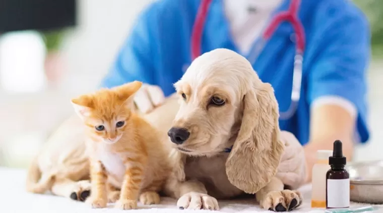
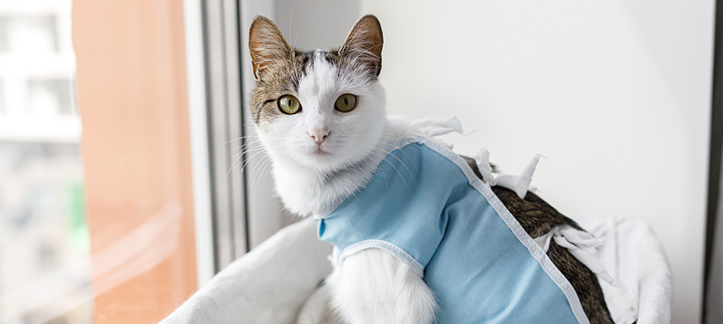

Estelirilización para
Perros & Gatos
Cuidándolos día a día.
Ofrecemos una solución rápida, segura y efectiva para la salud de tu mascota.
- Mejora su salud
- Disminuye comportamientos no deseados
- Bienestar emocional

